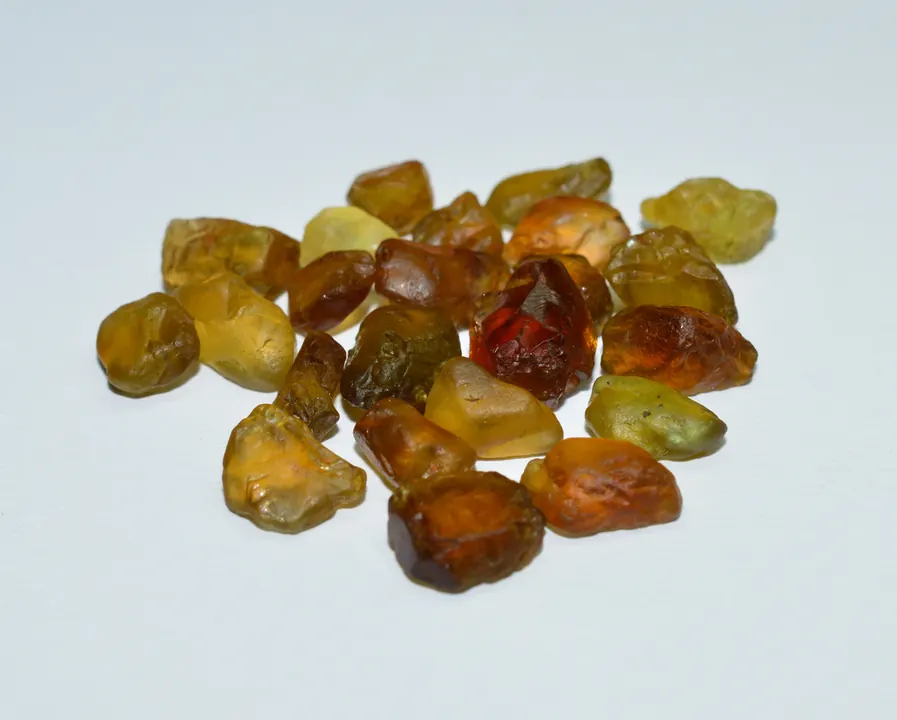

尖晶石：紅寶石的「雙胞胎」
英國王冠上那顆著名的「黑王子紅寶石」，其實是一顆尖晶石——它冒充了紅寶石六百年。

核心定義
尖晶石（spinel）是鎂鋁氧化物（MgAl₂O₄），硬度 8、折射率 1.71–1.73、比重 3.6——歷史上的「著名紅寶石」常是尖晶石：英國王冠上的「黑王子紅寶石」（Black Prince's Ruby）與「鐵木爾紅寶石」都是紅色尖晶石。它冒充紅寶石，騙了歐洲王室幾百年。
為什麼會搞混？紅色尖晶石與紅寶石外觀相似，但寶石學直到 18 世紀才分清兩者——「紅寶石」三個字曾泛指所有紅色珍貴寶石。如今尖晶石已正名，成為「顏值與性價比兼備」的崛起之星。
特徵與分類
| 顏色 | 描述 | 市場 |
|---|---|---|
| 緬甸紅尖晶 | 豔紅、紅寶色 | 最貴 |
| 熱粉 | 亮粉紅 | 受歡迎 |
| 鈷藍尖晶 | 豔藍 | 稀有 |
| 各色 | 橙紫綠黑 | 多樣 |
尖晶石的賣點：硬度 8（與紅寶同級）、淨度普遍佳（少內含物）、顏色鮮豔——它具備頂級紅寶石的外觀，價格卻親民得多。「像紅寶又不是紅寶」，是它的市場定位。
科學原理
尖晶石是「等軸晶系」（單折射）——紅寶石是三方晶系（雙折射）——兩者的關鍵鑑定差異：偏光鏡下尖晶石無雙折射、紅寶有。折射率（尖晶 1.71 vs 紅寶 1.76–1.77）與比重（3.6 vs 4.0）也分得清清楚楚。
尖晶石的顏色：紅色（鉻）、藍色（鐵/鈷）、紫色（鐵＋鉻）、綠色（鐵）——鈷藍尖晶（Co）是稀有品種。尖晶石淨度普遍好（生長環境少包裹體），是它「顏值高」的物理基礎。
鑑定與鑑別方法
- 偏光鏡：單折射（vs 紅寶雙折射）
- 折射儀：1.71–1.73（vs 紅寶 1.76）
- 比重：3.6（vs 紅寶 4.0）
- 看淨度：尖晶石普遍乾淨
- 實驗室定論：處理與產地
市場行情與保養建議
行情：尖晶石近十年價格快速上漲（「紅寶石的替代品」敘事＋緬甸紅尖晶稀有）——頂級緬甸紅尖晶每克拉可達數千美元；熱粉與鈷藍尖晶也有獨立行情。相比同色紅寶石，尖晶石仍是「性價比之選」。
趨勢：設計師與藏家越來越認可尖晶石的「獨立美學」——它不必是紅寶石的影子，本身就是頂級紅色寶石。
常見誤區
尖晶石是獨立礦物（鎂鋁氧化物）——它只是歷史上的「誤認」，不是仿品。如今它是正名的高級寶石。
頂級緬甸紅尖晶的稀有度與美不輸紅寶——硬度同為 8、淨度常更佳。它的「不如」，只輸在名氣與歷史敘事。
冷知識
「黑王子紅寶石」與「鐵木爾紅寶石」都鑲在英國王冠上——它們是紅色尖晶石，騙了歐洲王室六百年。
法國礦物學家多洛米厄（Dolomieu）證明「紅寶石與尖晶石是不同礦物」——寶石學的里程碑。
反直覺觀點
王冠、傳家寶上的「紅寶石」，經鑑定常是尖晶石——歷史的「贗品」，如今成了正名的珍寶。
「紅寶石雙胞胎」的敘事抬高了尖晶石的身價——誤認的歷史，成了它最好的行銷。